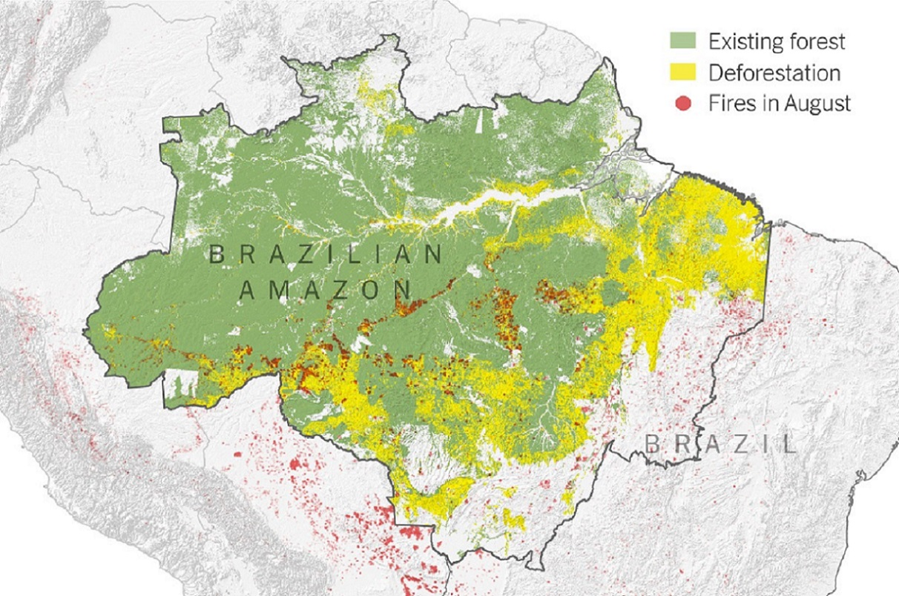

Since the introduction of mankind and human society, deforestation has plagued our planet. After the Industrial Revolution, things only got worse and worse. In recent decades, much of the focus have been on South America's Amazon rainforest.
The top graphic was made in 2019, mapping out both natural and manmade effects of tree loss in Brazil.
The bottom images are side by side comparisons between 1985 and 2016. Tree cover is indicated by the red color.
For the purposes of this map, "tree cover" refers to natural or planted stands of trees that are at least 5
meters.
It excludes tree stands in agricultural production systems (eg. fruit plantations and agroforestry systems) as
well as trees in urban parks and gardens.
Percentages are interpreted as "% of land area" and rounded to 4 decimal places.
Global tracker at the top left corner keeps count of tree cover worldwide. Hover over each country or region to see yearly stats as well as individual trends
Tree cover data for this map taken from Our World
in Data.
Country data for this map courtesy of DataHub.
Background image source: Mother
Nature Network.
Top image source: New York Times.
Bottom image source: Geospatial World.
Map Authored By: Shan Huan Wu
See my projects on GitHub: swu-uky
Follow me on Instagram: @meadowofhay